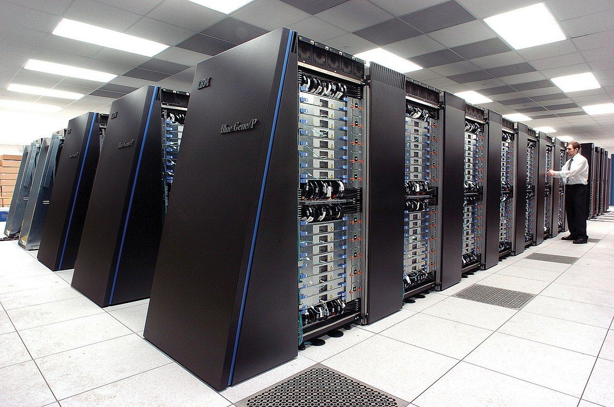

|
Classification of Computers |
|
|
Based on Operating Principles |
|
|
Analog computers |
The analog computers represent data in the form of continuous electrical signals having a specific magnitude. These computers are very fast in their operations to be carried out at the same time, and a powerful tool to solve differential equations. |
|
Digital Computers |
The digital computer is also known as the digital information processing system, is a type of computer that stores and processes data in the digital form. |
|
Hybrid Computers |
The hybrid computer is a combination of analog computer and digital computer because it encompasses the best features of both these computers. These computers store and process analog signals which have been converted into discrete numbers using analog to digital converters. Hybrid computers are mainly used in artificial intelligence (robotics) and computer aided manufacturing (e.g., process control) for example, money counting machine and Automated Teller Machine (ATM). |
|
Based on Application |
|
|
General purpose computers |
They are designed in such a manner that they can work in all environments. The general-purpose computers are versatile and can store several programs meant for performing distinct tasks. These computers are not efficient and consume a large amount of time in generating the results. |
|
Special purpose computers |
They are designed in such a manner that they can perform only a specified task. The special purpose computers are not versatile, and their speed and memory size depend on the task that is to be performed. The special purpose computers are efficient and consume less amount of time in generating the results. |
|
Based on Size and Capacity |
|
|
Microcomputers |
This is also called personal computers (PCs) and use microprocessor as its CPU, a memory unit, and input device and an output device. They are small; they do not have large storage capacities. The word length of a microcomputer lies in the range 8-32 but they can perform difficult task. They are used for general purpose calculations, industrial control, home appliances, desktop publishing, graphics designing and project management. These are of two types Desktops and Portables. |
|
Minicomputers |
These are faster and more powerful than microcomputers. Their word length is 32 bits (word length means number of bits in a computer word). These computers can perform more complex tasks and cost more than microcomputers. They are larger in size and their storage capacity is small to medium. This is used for payroll preparation, accounting, and scientific computation, controlling and monitoring production processes. |
|
Mainframes |
These are more powerful than minicomputers the word length may be 48, 60 or 64 bits. It has high processing speeds and can store large amounts of data. This is used in research organizations, large industries, large business and government organizations, banks and airline reservations where large database is needed. However, these computers consume more electricity. |
|  |
Super Computers |
These are the largest and fastest computers, there word length is 64-96 bit, it is also the costliest. It has several CPUs which operate in parallel to make it faster. This is used for massive data processing and solving very sophisticated problems, in the fields of science and defense, designing and launching missiles, weather forecasting, biomedical research, aircraft design and automobile design. |